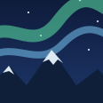
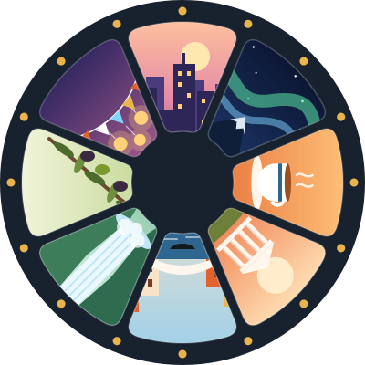

Did you know?
Spin the wheel once a day and get a random fact about the world: cities, nature, food and traditions.
- Countries & cities

Nature & sky- Food & drinks
- Culture & traditions

One spin a day. Make it count.
Today's fact is hidden here
Tap Spin. The wheel picks a topic, then you get one fact to read and share. One spin a day.